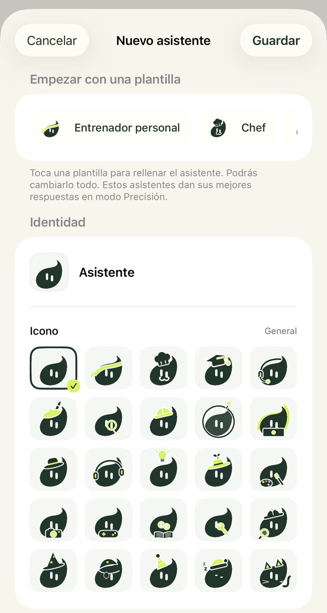
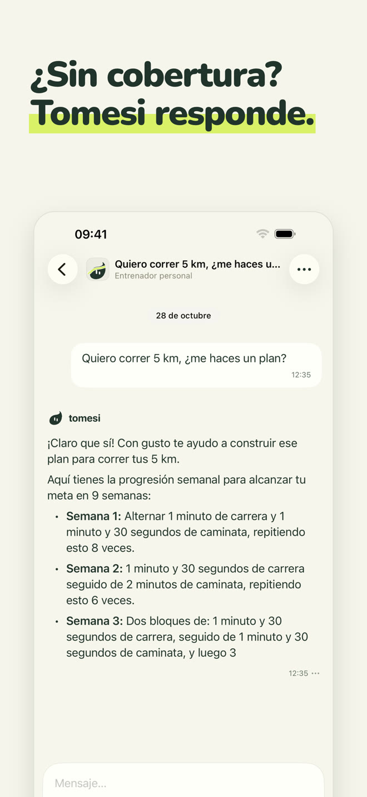
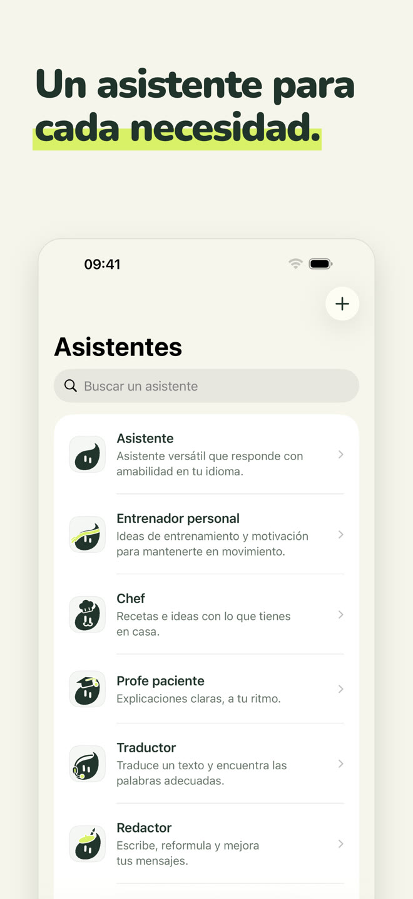
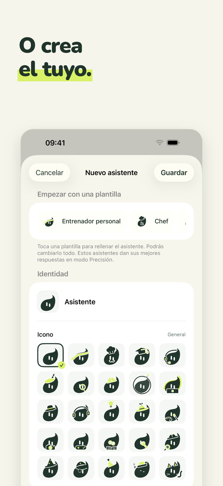
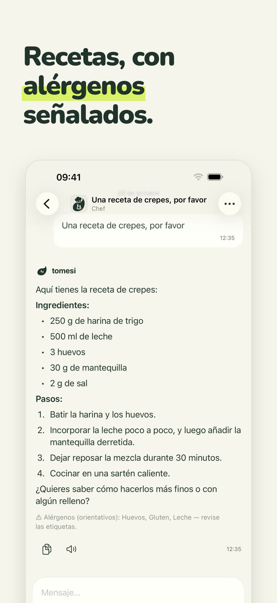
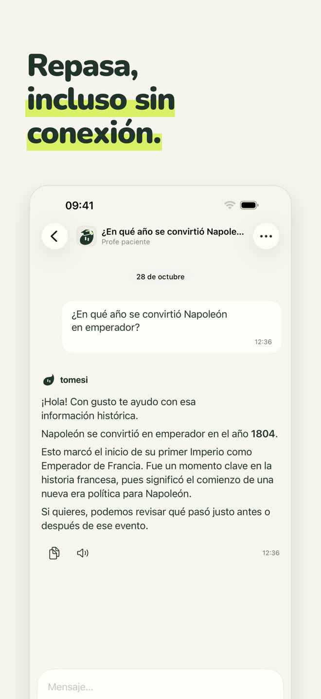
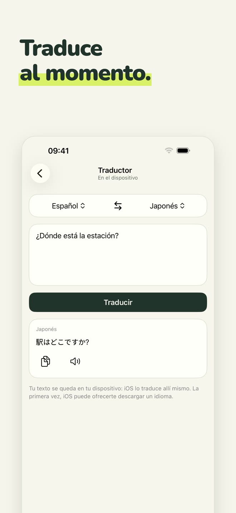
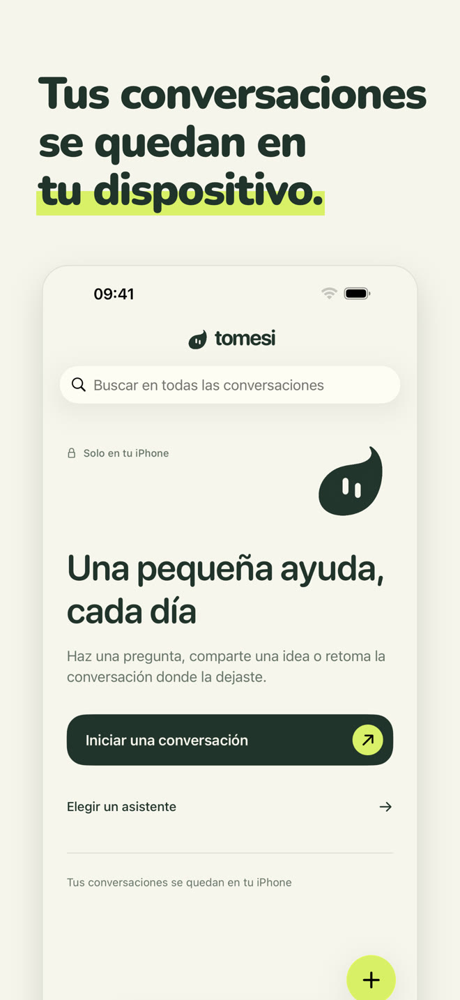

Un asistente de IA 100 % local: funciona en tu iPhone, en el avión, en la montaña, en el extranjero. Lo que escribes nunca sale de tu teléfono.
Descargar en el App StoreCompra única · sin cuenta · sin suscripción
Cada asistente tiene su papel y su forma de responder. Elige el que te ayuda o habla simplemente con el asistente polivalente.
Polivalente, responde con amabilidad en tu idioma.
Entrenamientos adaptados a tu tiempo y tu material, planes semana a semana.
Recetas sencillas con lo que tienes, con los alérgenos señalados.
Explica paso a paso, a tu ritmo: mates, historia, ciencias, gramática.
Traduce textos entre 13 idiomas, al momento.
Correos, mensajes, cartas; y la ortografía corregida error por error.
Ponle un nombre, una personalidad y uno de los 25 pictogramas de Tomesi: un asistente a tu medida, que también aprovecha las fichas de la app.

Un modelo pequeño no puede saberlo todo. Tomesi lleva fichas revisadas y se las da al asistente al responder.
Cantidades, pasos y alérgenos que la app muestra bajo la respuesta.
14 países, más fichas de ciencias, geografía y gramática en 14 idiomas.
Y 65 fichas: planes de varias semanas, recuperación, alimentación, deportes.
Como cualquier IA, Tomesi puede equivocarse: comprueba la información importante.







La IA está instalada en tu iPhone. Lo que escribes nunca se envía por internet ni se guarda en otro sitio.
Sin registro, sin correo, sin publicidad, sin datos recopilados.
No hay servidores que pagar, así que no hay suscripción: la app es tuya.
El modo Precisión, opcional, descarga un modelo más potente (unos 3 GB) para las respuestas que piden más matices.
Sí. Una vez instalados la app y su asistente, Tomesi ya no necesita internet: la IA funciona por completo en tu iPhone. Puedes comprobarlo activando el modo avión.
A ninguna parte. Se quedan en tu teléfono. Tomesi no tiene servidor de conversaciones, ni cuenta de usuario, ni publicidad. Consulta nuestra política de privacidad.
ChatGPT vive en servidores: necesitas conexión y tus conversaciones pasan por ellos. Tomesi vive en tu iPhone: menos enciclopédico que un gigante de la nube, pero siempre disponible, totalmente privado y sin suscripción.
Un iPhone con 8 GB de memoria (iPhone 15 Pro o posterior) con iOS 26 o posterior. Cuenta con unos 3 GB libres, y 3 GB más para el modo Precisión, opcional.
Sí, como cualquier IA. Las recetas, fechas de historia y fichas de la app están verificadas y se dan al asistente, lo que reduce mucho los errores, pero comprueba siempre la información importante.
Tomesi está traducido a 13 idiomas (español, inglés, francés, alemán, italiano, neerlandés, polaco, portugués, japonés, coreano, chino simplificado, ruso…) y el asistente entiende y responde en aún más idiomas.
Sí. MonIA ahora se llama Tomesi. Si ya la compraste, no tienes que volver a comprarla: basta con actualizar, y tus conversaciones se quedan en tu teléfono.